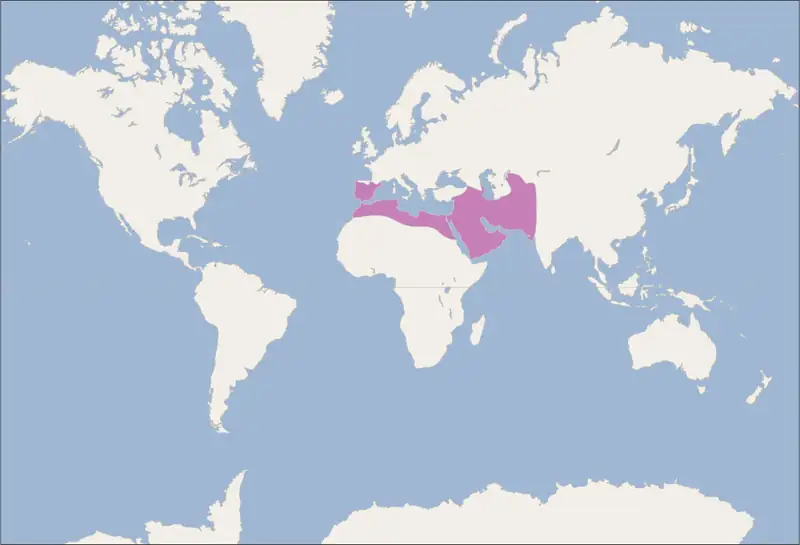
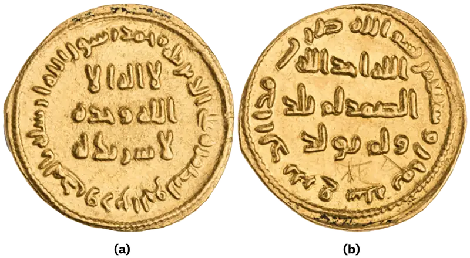
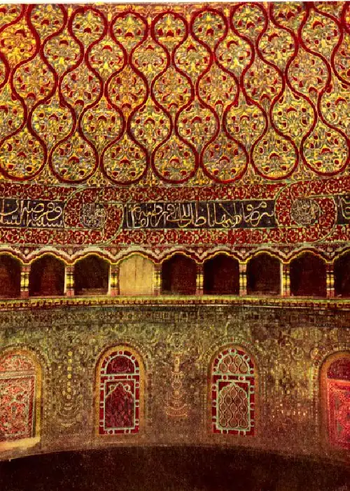
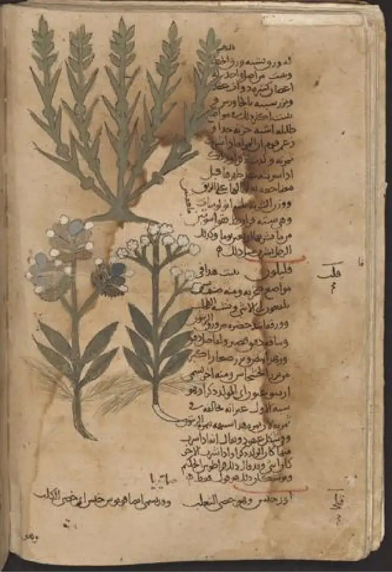

Chapter 11: The Rise of Islam and the Caliphates¶
Introduction¶
![A colorful illustration shows a man hitting a statue with a hoe-type object. The pale man is dressed in a long, flowy green robe with curly designs on it, white pants underneath, black shoes, and a wrapped, white head dressing that wraps under his chin with a gold halo circling his head. He has oval, black eyes, no facial hair, and has gold trim at the top of his sleeves. He is holding a hoe with both hands and hitting a golden statue laying on the ground. The statue is a bald man in a loincloth sitting cross-legged with his hands bent at the elbows, palms up, and head tilted up. Behind the fallen statue, there are two more upright statues in similar form blacked out in the drawing as well as a piece of another blacked out statue under the fallen golden statue. On both upper corners and along both sides of the drawing there are blue arches decorated with white flowers and brown drapes hanging down with pale green flowers. The background is pale yellow with black smudges in various locations throughout the drawing.](img/osx-worldhist-a11-00-abraham.webp)
The modern monotheistic religions of Judaism, Christianity, and Islam have a great deal in common with one another, including a number of traditions and beliefs. At the center of these shared traditions is the worship of one god, but the leadership of the prophets—individuals who were chosen to receive messages to humankind from God—is shared, too. Perhaps no prophetic figure is quite as central in all three faiths as the prophet Abraham (Figure 11.1). Abraham was a patriarch of the Israelites in Jewish and Christian tradition, a common ancestor known for his intense commitment to the worship of the one God in the scripture, the book of Genesis. In one of the best-known stories from the scripture featuring him, he was willing to sacrifice his own son if necessary in order to obey his God. Islamic tradition holds that he is also the ancestor of all the Arabs, and the house of worship he constructed in Mecca, in western Arabia, has become a revered site of pilgrimage for Muslims around the world.
![A timeline shows events from this chapter. 610: Muhammad founds Islam; a picture of an open book on a stand is shown. 628: Byzantine Empire defeats Persian Empire. 630: Islamic forces capture Mecca; a picture of an army on horseback and soldiers marching is shown destroying idols. 632: Death of Muhammad. 644: Pact of Umar written. 691: Dome of the Rock completed; a picture of a building with a gold dome is shown. 750: Umayyad Caliphate becomes world’s largest empire. 762: Baghdad founded; a map is shown of ancient Baghdad. 1083: Arabic translation of De Materia Medica completed; a worn page of a book is shown with writing and green leaves.](img/osx-worldhist-a11-00-timeline.webp)

11.1 The Rise and Message of Islam¶
Learning Objectives
By the end of this section, you will be able to:
- Describe the political, geographic, and economic circumstances within the Middle East during the rise of Islam
- Discuss the origins of Islam and the career of the prophet Muhammad
- Explain the uniqueness of the community Muhammad built
The story of Abraham, called Ibrahim, within Islam is an important one. Not only was he a monotheist at a time when his people had embraced polytheism and begun to worship various idols, but according to Islamic tradition, he was the first person to settle in what later became the city of Mecca. Abraham arrived there with his servant and concubine Hagar and their son Ishmael. There he constructed the Kaaba, considered by Muslims to be the house of God and the most sacred site in Islam.
Muslims believe that as generations passed, however, the descendants of Ishmael, the Arabs, forgot their monotheism and began to worship idols, entering a period of ignorance known as the jahiliyyah. There they remained until God sent a new prophet, Muhammad, to correct their religious practices and deliver them from ignorance and disbelief. This lapse and deliverance, according to the faithful, is the story of Islam.
Arabia on the Eve of Islam¶
Seen from the outside, the Arabian Peninsula of the fifth and sixth centuries CE was a seemingly marginal space, on the southern fringes of the last great realms of antiquity, the Byzantine (Roman) and Sasanian (Persian) Empires. The geography of much of Arabia was harsh; the peninsula was filled with many dry and inhospitable places where rainfall, access to water, and cultivatable land were in short supply. Even today, a large portion of the center of modern Saudi Arabia is taken up by the “Empty Quarter,” the Rubʽ al-Khali, a 250,000-square-mile sand desert that barely sustains the few local Arab tribes that continue to live in the region. To many, the Arabian Peninsula might not seem like an obvious setting for the rise of a ruling empire and one of the world’s largest religious traditions (Figure 11.4).
![A map is shown of the northeastern portion of Africa, southeastern Europe, and southwestern Asia. The Adriatic Sea, Mediterranean Sea, Aegean Sea, Black Sea, Red Sea, Gulf of Aden, Arabian Sea, Persian Gulf (Arabian Gulf), Caspian Sea, and Gulf of Oman are labeled. A section of southern Europe east of Italy through Greece and Turkey, south through Syria, Israel, Jordan, and extending to a northeastern portion of Egypt is highlighted orange to denote “Sasanian Empire.” A thin coastal section along the Persian Gulf of northeastern Saudi Arabia including Qatar and some of the United Arab Emirates are highlighted green to denote “Byzantine Empire.” Other lands highlighted green include areas heading north from there through Iraq, Iran, and the western portions of Pakistan and Afghanistan.](img/osx-worldhist-a11-01-m-medpers.webp)
The reality, however, is that the Arabian Peninsula is—and was—more diverse than it might immediately seem. In the fifth, sixth, and early seventh centuries, it was the home of disparate tribes often united by the bonds of kinship typical of nomadic and seminomadic peoples around the world, and divided for the same reason. As they do with the Celts, Iroquois, Mongols, and Persians (to name but a few), historians often group peoples together because of their use of a common language, their habitation of a specific geographic area, and aspects of culture they share such as food, dress, and religious practices. But beyond these shared features, little unified the peoples of the Arabian Peninsula prior to the seventh century. Many communities in the region were divided along tribal lines while vying with one another for power, prestige, influence, and available resources.
The great Byzantine and Persian Empires to the immediate north had a history of expansion and conflict. Despite their strength, however, neither desired to dominate Arabia. To those classical states, much of Arabia appeared as a backwater occupied by migratory and aggressive Arab tribes and offered no reason for them to turn their imperial ambitions southward. Few resources were produced in the region that suggested conquest would be worthwhile, even if western Arabia did play a role in the caravans of trade goods that traveled between east and west.
However, the region was a tapestry of unique cultures and history. The Bedouin were migratory Arab tribes that largely subsisted on animal herding and, in some instances, on the raiding of trade caravans and settled communities. Many Bedouin and other seminomadic Arabs practiced polytheism, the worship of many gods and goddesses who were often considered patrons of certain tribes or residents of certain locales. Polytheistic religions were not all that was found in the Arabian Peninsula: the monotheistic faiths of Judaism and Christianity were both present in the region before the arrival of Islam, and they influenced its formation. Given the harshness of the environment, in fact, during the ancient and late antique periods, important monasteries were founded for Christian worship, allowing the monks there to fully dedicate themselves to an ascetic life detached from the earthly world (Figure 11.5).
![A picture of various buildings built tightly next to each other within square-shaped high brick walls is shown along the backdrop of a tall, brown, rocky mountain with a blue sky in the background. The buildings are various shapes, sizes, and colors, with one of the buildings running the length of the area in the back and taller than the rest. The buildings have windows throughout and are various shades of brown, black, and white. The brick wall around the buildings is brown and has two rounded and one square column in front, one rounded one on the left front corner, and a square tower on the left side rising higher than the wall. Between two of the columns on the front there is a cemented walkway coming out and running the length of the enclosure toward the right of the picture into an area with green trees of various sizes and shapes. Some of the trees are within smaller stone walls, and some rise higher behind the buildings. More short, windowed structures are seen in the far right of the picture. The terrain in the forefront of the picture is rocky and barren. One small building sits on the mountain in the background behind the walled enclosure.](img/osx-worldhist-a11-01-monastery.webp)
In the very south of the Arabian Peninsula, in what is Yemen today, was a kingdom known as Himyar. Its rulers controlled some of the most fertile lands in the region. They built their state on agricultural produce, on luxury goods such as frankincense and myrrh, and on their role as intermediaries in both East African and Indian Ocean trade. The Himyarites and their predecessors the Sabaeans played significant roles in long-distance trade, using camel caravans along the western coast of Arabia to bring goods from Africa and Asia to the markets in places such as Alexandria, Damascus, Jerusalem, and beyond (Figure 11.6). Their cultural influence was important, too, with a number of the southern Arab tribes connecting their history and lineage directly with these prestigious states. The decision by the Himyarite rulers to convert to Judaism in the late fourth century CE made monotheism more prominent in the region.
![A map of southern Europe, northern Africa, and southwestern Asia is shown. The Adriatic Sea, Mediterranean Sea, Aegean Sea, Black Sea, Caspian Sea, Red Sea, Gulf of Aden, Persian Gulf, Gulf of Oman, and the Arabian Sea are labeled. An oval area in eastern Africa at the southern end of the Red Sea is highlighted orange and labeled “Kingdom of Aksum.” Most of the country of Yemen is highlighted green indicating the “Kingdom of Himyar.” A red dotted line heads north from the city of Aden along the Gulf of Aden in Yemen to the city of Mecca, then Petra in Arabia, crossing west to Africa to the city of Memphis. One line splits off and goes north toward Alexandria on the coast of the Mediterranean Sea. The other red dotted line heads south through Egypt along the Nile River through Lake Nasser and down to the city of Meroe and then veers off southwest into Africa. Another red dotted line starts at the city of Maleo which sits on the African side across the Gulf of Aden from the city of Aden. The line heads north to the city of Aksum and then Adulis which is on the western side of the Red Sea. Then the line meets up with the other red dotted line in Meroe. A purple line begins in Memphis in northern Africa and heads south in the Red Sea with stops in Berenice on the western side of the Red Sea, then Adulis, and then Aden and ending with two arrows in the Arabian Sea, one heading northeast and one heading south. Other cities labeled from north to south include: Damascus, Jerusalem, and Roha.](img/osx-worldhist-a11-01-m-aksum.webp)
In the very north of Arabia, along the southern borders of the Byzantine and Sasanian Empires, were the Arabs who had the most sustained interactions with those two imperial powers. While tribes in the region had long acted as trade intermediaries between the Mediterranean world and the Indian Ocean states, those of northern Arabia were most regularly engaged in harassing the trade caravans that brought goods to and from the urban imperial centers. To combat this aggression on their southern borders, both the Byzantines and the Persians opted to employ certain Arab confederations to create a buffer between the settled peoples and the raiders from the south. Best known were the Ghassanids and the Lakhmids, who were brought into the service of the Byzantines and Persians, respectively, by the sixth century CE and became increasingly acculturated to them.
The Ghassanids adopted many elements of Byzantine culture, including Christianity. In fact, it was among Christian Arabs specifically that historians have found some of the earliest surviving uses of the Arabic script, from the seventh century. The Byzantine emperors also formally recognized and rewarded the Ghassanids, at least for a time. The Ghassanid ruler was documented as a phylarch (local ruler or chieftain) and given titles of honor by the Byzantine emperor Justinian during the sixth century.
The Lakhmids established themselves in the central Iraqi city of Al-Hirah and were recognized as allies of the Sasanian Persians from the late fourth century onward (Figure 11.7). Some of the Lakhmids embraced a form of Christianity known as Nestorianism and, like the Ghassanids, were able to thrive on the patronage of the great empire while protecting its southern borders from other Arabs. Both tribes were more than just servants of their larger patrons, however. They were allies with a certain degree of autonomy that allowed their societies to flourish. The money and support they received allowed them to become powerful confederations in comparison to other Arab tribes, and their conversion to Christianity allowed the further spread of monotheism in the region.
![A drawing is shown with men working to build a building. At the top of the drawing there is blue sky seen over the walls and a vertical beige-colored panel on the left with ancient writing in black ink. One wall of a beige building is seen with vertical lines and a gray arched opening in the middle. A brown scaffolding is seen in front of the doorway with two men – one on the top tier with a tool and a brick looking down while a man below him on the next tier holds on to one of the side beams. Above them on the roof in the middle, two men are laying bricks while a man on the right side hands them the bricks. A man on the left side is lowering a basket with a rope to a man standing on the ground with his arms outstretched. A ladder stands to the right of the scaffolding and a man is climbing down holding a rectangular object. At the bottom of the scaffolding a man is holding a square object in his hands at his side. On the ground in the forefront there are men working at various tasks. Two men are chipping away at stone, two men dig while one man leans over with a rectangular object close by, five men carry various items on their backs and in their arms, and two men are carrying a stretcher of stones. All of the men are dressed in a variety of solid colored loose-fitting shirts or bare-chested, wear knee length pants, turbans and head cloths, belts, and caps and all but one are barefoot. They all have different skin colors and some have facial hair.](img/osx-worldhist-a11-01-al-hira.webp)
The relationship between the Byzantines and the Sasanian Persians was very often tense, however. Both empires had ambitions to expand their influence, and they regularly skirmished with one another and attempted to meddle in each other’s politics, including by supporting rival claimants to the throne. Their combative relationship was not unique in late antiquity. When Rome was still a united empire and Persia was ruled by the Parthian dynasty, conflict between those two sides occurred regularly. By the sixth century, however, such conflicts between the two great powers of the region were increasingly costly and risky. Both states had a good deal to lose from open warfare, and much of their conflict played out through proxies, often the Arab Ghassanids and the Lakhmids. This arrangement was beneficial for the Arab tribes so long as payment and recognition of their role was forthcoming. By the beginning of the seventh century, however, much had changed.
The borderlands between the Byzantine Empire and Sasanian Persia were often where conflicts broke out, and this happened several times during the sixth century, especially in places like Iraq and Armenia (now called the Caucasus). In the year 602, however, the conflict exploded. The Byzantine emperor Maurice, who had helped the Sasanian ruler Khosrow II regain the throne of Persia and brought peace between the two sides, was murdered by his own troops. They installed a new emperor, Phocas, and Khosrow vowed revenge, using the coup as a reason to begin what historians call “the last great war of antiquity” (Figure 11.8).
![A map is shown of the northeastern tip of Egypt, Arabia, and the land north up to the Black Sea, the Caspian Sea at the east and the Aegean Sea to the west. The Persian Gulf (Arabian Gulf) is seen in the southeast portion of the map and the Red Sea is seen in the southwest. Black arrows are seen throughout the map indicating “Kavad I campaigns.” A black arrow begins southeast of the city of Dvin in Armenia and heads west to Theodosiopolis then south to Amida. Southeast of Amida a black arrow begins at Dara and heads west to Edessa. In the southern portion at the city of Ctesiphon along the Tigris River a black arrow begins and travels north along the Euphrates River to Circesium and then through the city of Callinicum and north past Carrhae. Blue arrows are seen on the map indicating “Khosrow I campaigns.” Two blue arrows begin in the same area southeast of Dvin. One blue arrow heads northwest past Tbilisi in Georgia and the other heads toward Theodosiopolis and west almost reaching the city of Caesarea, and then swings back east past Amida and then heads south of Martyropolois. A blue arrow heads from south of Dara west to an area south of Edessa while a blue arrow starts in Antioch and heads east to Edessa and then on to Dara. The final blue arrow begins in Ctesiphon and heads north along the Euphrates River past Circesium and then splits, one going north almost to Edessa. The other blue arrow heads through Callinicum and then splits, one going south past Sergiopolis in Syria and the other heading west past Sura and Beroea and on to Antioch, then south to Apamea. Red dashed arrows are shown indicating “Khosrow II campaigns.” Three red dashed arrows all begin in Antioch. One heads north to Caesarea where it splits – one heading east, one heading north past Ankara and on to Chalcedon, and one heading west to Ephesus on the Aegean Sea. Another red dashed arrow leaves Antioch and heads east toward Dara and then a bit northwest to Amida, and then is also shown heading back from Dara to Antioch. The last red dashed arrow heads south from Antioch past Apamea, Damascus, Caesarea (different from the one in the north), Jerusalem and then heads west to Alexandria.](img/osx-worldhist-a11-01-m-khosrow.webp)
Between 602 and 628, the Byzantines and Persians waged a devastating conflict that had long-lasting repercussions for the entire region. In the first phase, Khosrow and the Persians overwhelmed the Byzantines and claimed much of their eastern Mediterranean territory, including Iraq, Syria, Jordan, Palestine, and crucially, the vital agricultural province of Egypt. Phocas, facing upheaval within his empire aside from the war with the Persians, was deposed and then executed in 610 by the newly declared emperor Heraclius. Desperate to claim back lost territory, return stability to the state, and rebuild the army to face the Persians, Heraclius was able to lead the Byzantines to victory and end the conflict in 628 (Figure 11.9).
![An image of a plaque is shown. Across the top and bottom a blue stripe shows with a pattern of white fluted diamonds throughout. In the image, two figures are shown on a yellow background. The man on the left wears a green robe with a light blue cloak, both with gold trim. He has reddish brown hair, a beard, blue shoes and appears to be falling. The man on the right has a brown beard, large eyes, wears a white-spotted, blue robe and a green cloak, both with gold trim, a blue helmet and blue shoes. His right hand holds a long brown sword over his head and his left hand is pulling the hair of the other figure. A blue and red domed crown falls to the ground between the two men. Short green hills can be seen in the lower background and in the left corner the blue half of a semicircle displays a gold crescent moon and four stars of varying sizes. The letters “ERACLIVS REX” are etched in brown on the right above the second figure and the letters “COSDRE” are etched behind the cloak of the figure on the left.](img/osx-worldhist-a11-01-heraclius.webp)
Heraclius and the Byzantines did not go on to destroy the Sasanian dynasty, however. While Khosrow II was overthrown in a civil war at the end of the conflict, neither side was truly capable of continuing a long and costly fight against the other. The Byzantines were ultimately victorious, but the war was devastating for both sides politically, militarily, and economically. Despite his accomplishments, Heraclius had placed all his focus and state expenditures on the war itself rather than on truly governing the empire. Both sides had lost an enormous number of soldiers over more than fifteen years of conflict, and those who survived were war-weary and ready for retirement. Neither side had the money to rebuild the army or their defenses when they had put so much of the state’s resources toward victory—and survival.
With so much upheaval occurring despite the Byzantine victory, the war affected many aspects of society, including the state and nobility’s ability to patronize scholarship, historical writing, and the arts, leading this period to be known as the “Byzantine Dark Age” because of the severe lack of historical writing that survived in the seventh and eight centuries. Finally, the borders were constantly changing, and many civilians just attempting to live their lives were likely tossed between sides as the tides of war changed. More war would have taken an exhausting toll even on the people living in seemingly safe places like Jerusalem, Antioch, and Damascus.
As it was, the impacts of the conflict were far-reaching. The later Byzantine chronicler Theophanes wrote in the early ninth century about how the conflict had changed the relationship between the Byzantines and the Arabs in the year 630–631, including, almost certainly, tribes like the Ghassanids that had enjoyed special privileges and payments from the state. Theophanes wrote, “There were some nearby Arabs who received modest allowances from the emperors for guarding the desert pathways. A eunuch came to distribute to the soldiers’ allowances; but this time, when the Arabs came to receive theirs, as was their custom, the eunuch drove them away. ‘The ruler can hardly afford to pay his troops,’ he said, ‘much less give money to such dogs as these.’ The Arabs were outraged, went to their comrades, and showed them the route to the district of Gaza, the pathways toward Sinai, which were extremely rich.”
The timeline and circumstances of this long final conflict between the Byzantines and Sasanians, and the exhausted state in which both sides were left, were also significant for future events. While these great powers were distracted by the devastating war between them, their southern border was likely far from their rulers’ minds. Yet at the same time, the Arabs of western Arabia were being united for the first time in history, through the leadership of a man named Muhammad and the religion of Islam, with direct repercussions for the survival of the two ancient empires.
The Religious Tradition of Islam¶
While the conflict between the Byzantines and the Sasanians raged at the beginning of the seventh century, western Arabia began to take center stage in the creation of a new world religion deeply influenced by the environment, people, and cultures of the late antique Middle East. That religion was Islam, a word meaning “submission [to the one God].” Islam is a monotheistic faith that shares many features with both Judaism and Christianity, while at the same time having many features that were uniquely Arabian and that eventually brought the culture and traditions of the Arabian Peninsula to greater prominence.
Understanding Islam’s origins and early decades can be challenging. Much of what we know about the earliest community of Muslims comes from sources within the community itself that often assume the reader is already a believer, so they omit important details. And because many people were illiterate at this time and not writing their history as it happened, we have less evidence outside religious scripture to help us reconstruct it. While the Arabs placed great emphasis on remembering the events and people of the area’s past, they transmitted this information primarily through a process of memorization and oral recitation, and memory aids, such as poetry, were vital methods as material was passed down through generations. Written histories of the past for future generations were seen as less important than the living “performance” of information through the oral tradition.
While other contemporary societies had become increasingly focused on writing for centuries before the seventh century, the Arab commitment to oral transmission in this period was not unprecedented. The history of early Judaism was similarly transmitted before being committed to writing much later, and historians also face challenges trying to reconstruct the origins of Christianity when little contemporaneous writing survives. Memorializing, memorizing, and transmitting events of the past through epic poetry also has precedent in the Mediterranean world, as seen in the preservation of works such as The Iliad and The Odyssey, attributed to the Greek poet Homer, and the ancient Indian world, as in the case of the Mahabharata.
At the center of the founding of Islam are the city of Mecca, the worship of one God—Allah—and the leadership of the prophets. Even to Muslims today, Allah is not considered to be a god separate from the God of Judaism and Christianity; Allah is simply the Arabic word meaning “the one God.” In fact, Christians who live in the Middle East and speak Arabic today refer to the God of the Christian Bible by using the word “Allah” in their own worship. Belief in the one God and the message of the Islamic prophet Muhammad is the first and most important of the “Five Pillars of Islam,” known as the shahada, the profession of faith. To embrace Islam as their religion, adherents must recognize the creed that “There is no god but Allah, and Muhammad is the messenger of God.” Muhammad, as recognized by Muslims, was the final prophet in a long list with whom the one God had communicated throughout history, including figures such as Adam, Noah, Abraham, Moses, and Jesus. Muhammad was a divinely chosen man who is not, nor ever has been, worshipped as a God or as a relative of God himself.
Many of the other pillars of Islam also have features in common with other world religions such as ritual fasting, charity, and daily prayer. For Muslims, these acts are specified as daily prayer while facing the direction of the holy mosque in the city of Mecca; almsgiving, the donation of money and goods to the community and people in need; fasting (if able) during Ramadan, the holy month during which the Muslim scripture of the Quran was first revealed to Muhammad; and participating at least once (if able) in the pilgrimage to Mecca—the hajj—to relive important moments in the life of Abraham and his family’s arrival in Arabia and to circle the house of God, the Kaaba, in prayer.
Link to the Past: Hajj: The Islamic Pilgrimage to Mecca
One of the core tenets or “Five Pillars” of Islam is participation in the pilgrimage to the holy city of Mecca. This event, when undertaken during the month of Dhu al-Hijja, is known as the hajj. Each year millions of Muslims travel to the holy city to take part in a process that has been going on for almost fourteen hundred years.
While Mecca was the home of the prophet Muhammad, for Muslims the pilgrimage is about much more. The rituals and events in which they participate are intended to reenact important events in the life of a different prophet, Abraham. The sacred mosque that is the focus of much of the pilgrimage is the holiest site of Islam, built to surround the Kaaba, the black-shrouded cube structure at the center that is believed to be the original home of monotheism (Figure 11.10). Some Muslims believe the Kaaba was constructed by Adam, the first man, and then reconstructed by Abraham.
![A picture of a very large gathering area is shown. The open area inside is filled with people, most of them wearing white head coverings. In the center of the people stands a short square building that is covered in black. The perimeter of the area is two tiered with arched openings all around and lights and people showing from within. Lights show along the top and on the back wall three domed projections stand along the top of the wall. Five tall slim towers also rise up from the top wall and are lit up and carved with designs. In the background a dark sky is seen and a city with tall lit up buildings.](img/osx-worldhist-a11-01-hajj.webp)
The five- to six-day hajj recognizes the long history of monotheism in Arabia, acknowledging that Muhammad’s career and message were the correction and perfection of monotheistic worship begun centuries earlier. In addition to Adam, Abraham, and Muhammad, other great figures of history have been adopted and associated with worship at the Kaaba, including Iskandar, more recognizably known as Alexander the Great.
Islamic law recognizes that the hajj is not a trip every Muslim will be able to take. Some may not be healthy enough, and Islamic charitable organizations around the world collect donations to support those who cannot otherwise afford it. Pilgrims may also travel to the holy mosque during other times of the year, which is not considered as having made the hajj but is instead called the umra, the “lesser pilgrimage.”
- What are the historical implications of the pilgrimage to Mecca being one of the core tenets of Islam?
- How might the obstacles to making such a pilgrimage today be greater or smaller than in the past?
Muslims have believed throughout their history that Islam and its holy writings are not a new faith created in the seventh century. Instead, the faith that Muhammad brought to the Arabs in the early 600s was merely a corrective to the monotheistic religions that had come before. From the perspective of most Muslims, Islam is the same faith as Judaism and Christianity, with adherents of all three traditions worshipping the same God and recognizing divine intercession in humanity through the leadership of the prophets. Muslims also recognize the holy scriptures of Judaism and Christianity as having been given to humans by God but then corrupted over time. Islam thus sees itself as a purer form of these faiths and directly connected to both. The shared history and lineage of the three run through the prophet Abraham, whom all list as an ancestor. Many modern scholars of religion thus refer to Judaism, Christianity, and Islam as the Abrahamic faiths.
For all the influence that other monotheistic worship in the region may have had on the formation of Islam in the seventh century, however, the faith has many features we might consider uniquely Arab or Arabian. First, of course, is the setting itself. While the land that is modern Israel and Palestine played a central role in the narratives of Judaism and Christianity, much of the story of the formation of Islam as a distinct religion is found in western Arabia, a region of the peninsula known as the Hijaz. Its holiest sites lie in this region, and the life of its founder was spent almost entirely there.
The faith is firmly connected to Arabic, the indigenous language of the region, especially in its holiest scriptures and also in cultural features like the survival of Arabic poetry as a means of recording the past. The tribal structure of pre-Islamic Arabian society also defined the first several decades of the religion and the states it inspired, which included a social hierarchy that made it nearly impossible to convert to Islam for the better part of the first century of the faith unless an individual was first embraced as a member of an Arab tribe. In this way, conversion was connected to the old ways of the Arabs, which did not require a convert to be of a particular ethnicity or bloodline but did require the adoption of the cultural traditions and markers of the Arabian tribal society. For these earliest adherents of the faith, it seems likely that they felt the one God had chosen the western Arabian peoples and their traditions for special recognition, and embracing these features was a prerequisite for being among the “chosen” people. But more influential than anything, perhaps, was the Muslims’ belief in the leadership and message of the man whom God chose as his final prophet, an Arab of the early seventh century from the Hijaz of western Arabia.
The Islamic Prophet Muhammad¶
Muslim tradition tells us that Muhammad was a merchant from a prominent Arab tribe called Quraysh in the Hijaz region. Born in the city of Mecca, he spent his early life engaged in the trade that passed along the north–south trade routes through his city, a hub that had become a waystation and a good place to conduct business (Figure 11.11). The tribe of Quraysh dominated leadership and trade in the region in large part because its members were the protectors of the sacred Kaaba, which in this period, we are told, had become a house of idol worship, a center of polytheism among the Arabs. Long-distance trade of luxury goods could be risky because of raiding that occurred along trade routes, and the Kaaba had become a sanctuary where fighting was illicit, making it a safe place to conduct business. The Quraysh were enriched as the stewards of this important sanctuary and had a keen interest in protecting its role in society.
![A map of southern Europe, northern Africa, and southwestern Asia is shown. The Adriatic Sea, the Mediterranean Sea, the Aegean Sea, the Black Sea, the Caspian Sea, the Red Sea, the Gulf of Aden, the Persian Gulf (Arabian Gulf), the Gulf of Oman, and the Arabian Sea are labeled. An oval area stretching from Nishapur in northern Persia south to Siraf on the Persian Gulf (Arabian Gulf) and west to just past Mosul and almost Palmyra is highlighted orange indicating “Sasanian Empire.” A thin area along the northern coast of Africa is highlighted green indicating “Byzantine Empire.” Other areas highlighted green include: southern Italy, all of Greece and Turkey and the land along the coast between Turkey and Egypt. Purple dashed arrows are drawn on the map indicating “Sea trade route.” Purple dashed arrows begin in Constantinople in the north and head south through the Aegean Sea splitting into three – one heading west into the Mediterranean Sea, one heading east to Aleppo and the other heading south to Alexandria. South of Alexandria the dashed purple arrow picks up and heads south through the Red Sea to Aden in Arabia and then splits – one way heading south and the other heading to the Arabian Sea where it meets up with an arrow coming south through the Persian Gulf (Arabian Gulf) and the Gulf of Oman from an area south of Ctesiphon in Persia. Dotted red lines are shown throughout the map indicating ”Land trade route.” One red dotted line begins in Constantinople in the north and heads in a zig-zag down toward Aleppo. From Aleppo one red dotted line heads south through Jerusalem then up to Alexandria and then south to an area along the coast across the Red Sea from Mecca. From Aleppo another red dotted line heads east to Mosul in Persia and then to Ctesiphon and then on to Nishapur. From Nishapur it splits into three red dotted arrows and heads off into Asia. Before Nishapur it also splits off south to Siraf along the Persian Gulf. From Aleppo a red dotted line also heads south to Damascus then the line forms many grids all over Arabia connecting and intersecting all of these cities: Petra, Medina, Mecca, Aden, Muscat, and Ctesiphon.](img/osx-worldhist-a11-01-m-arabtrd.webp)
According to Muslim belief, in the year 610 the middle-aged Muhammad, who had traveled to a cave just outside Mecca for contemplation, received contact from God through the intermediary of the angel Gabriel (Jabrīl in Arabic). Muhammad was told to recite the first revelations of a scripture that became the Muslim holy book, the Quran. He returned home amazed and surprised by what he had experienced. As a well-traveled and successful trader in the region, he had much to lose from undertaking a religious mission with a novel message. For one thing, a new religion would threaten the balance of power within his Arab tribe by plainly rejecting the polytheism that many in the community practiced and the financial benefits that came with the Kaaba. However, Muhammad essentially abandoned a financially stable and comfortable life as a merchant to embrace what he believed was required by God: becoming a preacher and working to save the souls of his family and kin from a coming day of judgment.
There has been much disagreement throughout history over who was the first man to convert to Islam after hearing Muhammad’s message, but there is no debate among Muslim sources about who was the first person to do so: his first wife Khadija. As a successful merchant in her own right—who had lifted Muhammad’s standing in their community by marrying him and bringing him into her caravan business—Khadija too would have had much to lose in supporting the new religion. The earliest biographer of Muhammad, Ibn Ishaq, described the critical support she provided Muhammad by saying, “Khadija believed in him and accepted as true what he brought from God, helping him in his work . . . through her, God lightened the burden of his prophet.”
While many of Muhammad’s confidants and family members embraced Islam shortly after the revelations began and continued, his career as a prophet, especially the first twelve years, was fraught with challenge. His preaching of monotheism upset the political status quo and was often resisted. The support of his family, especially his wives, was critical to his success as a preacher, and the guidance of Khadija was especially significant. Tradition suggests that when Muhammad thought he might be mad as the revelations first came to him, it was she who convinced him to trust and embrace his new calling.
In 622, Muhammad’s twelfth year of prophecy, his community fled persecution and increasing aggression by the polytheist Meccans. They were invited to join another community of Arabs in a city called Yathrib, later known as Medina, “the city” or more specifically “the prophet’s city.” There they were welcomed among other Arab tribes, including some practicing Judaism. This hijra, meaning “emigration,” was a watershed moment for Muhammad’s early community. At a low ebb and without any certainty of survival, Islam now changed from a small religion mostly confined to Mecca to a larger community united by Muhammad that solidified its place in world history. The hijra holds such importance in the history of Islam that the Islamic lunar calendar counts 622 CE as its first year. (Dates in the Muslim calendar, used by many around the world today, are often labeled in English with AH, for “After the Hijra.”)
Link to Learning
Many Muslims throughout history have avoided depicting the Islamic prophet Muhammad in human form in their art, with some feeling that portraying the Prophet could be misconstrued as idolatrous, or revering something (or someone) besides God. But Muslim artists have also depicted their founder Muhammad in words and calligraphic art for centuries, as a sign of respect and as part of their recounting of the important narrative of his life.
Muhammad’s Community¶
While the narrative of Islam under Muhammad’s leadership centers on Arabs and Arab society in the seventh century, many factors influenced his message, his leadership, and the growth of the community of Muslims, called the ummah. The Muslim emigration to Medina was one step in a wider process as Muhammad sought shelter for his community, an opportunity to spread the message of Islam outside his region, and ultimately the unification of Arab tribes into a confederacy the region had never seen.
Even before fleeing Mecca, some from Muhammad’s community sought refuge and support wherever they could find it as they attempted to expose more of the region to the monotheistic message of Islam. One support was found across the Red Sea, in East Africa in the Christian Kingdom of Aksum. There, the Negus—the leader of Aksum in what is modern-day Ethiopia—provided shelter for Muslims fleeing Meccan persecution and allowed them to practice their faith under his protection. Many remained there until they were able to return to Muhammad and emigrate to Medina, too. This support from the Aksumites was important to the survival of Islam, and in fact the decision by some early Muslims to seek refuge in Ethiopia is sometimes referred to as “the first hijra.”
In Medina, the previously polytheist Arabs, Jewish Arabs, and Muhammad’s ummah formed an alliance for their common defense. Muhammad served first as an arbiter of disputes between the tribes and, soon after, as the city’s de facto leader. Under his guidance, the community devised the Constitution of Medina as a means to solidify the agreement between the tribes and their mutual responsibility to protect their city and its people from outside attack. Later Muslim rulers saw the constitution as a blueprint for the creation of a religious society that tolerated those of other faiths while supporting the worship of the one God, mutual defense for the community, and Muhammad’s leadership.
The constitution stated that “the believers and Muslims of [the tribe of] Quraysh and Medina and those who join them . . . form one ummah to the exclusion of others.” It goes on to explain that the Jewish Arabs of the tribe of Banu Awf “are secure from the believers [the Muslims]. The Jews have their religion and the Muslims have theirs.” The phrases most commonly used in the constitution to describe Muhammad’s followers are “Muslims” (“those who have submitted to God”) and “believers” (al-Mu’minun). For this reason, some historians have described the earliest ummah as a “community of believers” that was open to most monotheists. In these earliest decades of Islam, Muhammad’s new community had much in common with the monotheistic Jewish people and Christians, and we find little evidence of the distinctive Muslim identity that formed over the next several centuries.
In Their Own Words: Jewish and Christian Narratives in the Quran
The holy scripture of Islam, the Quran, is deeply intertextual, meaning it has a relationship with and is often in dialogue with other texts, namely the Jewish Tanakh and the Christian Bible. Here in translation are excerpts from Surah (Chapter) 5 that, in part, address Muhammad’s community about where their faith fits with the other monotheistic traditions, Judaism and Christianity.
“The Jews and Christians say, “We are the children of God, the ones He loves.” Say: “Then why does He punish you for your sins? No. You are mortals, of those He has created. He forgives those whom He wishes and He punishes those whom He wishes. God has sovereignty over the heavens and the earth and what is between them. To Him is the journeying.” O people of the Scripture, Our messenger has come to you, making things clear to you after an interval between messengers, so that you cannot say, “No bearer of good tidings or warner has come to us.” A bearer of good tidings and a warner has come to you. God has power over everything. And [recall] when Moses said to his people, “O my people, remember the blessings of God to you when He placed prophets amongst you and made you kings and gave you what He had not given to anyone [else] among created beings. O my people, Enter the holy land which God has prescribed for you. Do not turn your backs, lest you return as losers.” And recite to them in truth, the tale of the two sons of Adam [Cain and Abel], when they offered sacrifices, and it was accepted from one of them and not from the other. [The latter, Cain] said, “I shall kill you.” [Abel] replied, “God accepts only from those who are god-fearing. If you stretch out your hand to me to kill me, I shall not stretch out my hand to kill you. I fear God, Lord of created beings. I wish you to take on both your sin and my sin and become one of the companions of the Fire. That is the recompense of evil-doers.” Then his soul prompted him to kill his brother; so he killed him, and became one of the losers. Then God sent a crow, which scratched into the earth to show him how he might hide the corpse of his brother. He said, “Woe on me. Am I unable to be like this crow, and hide the corpse of my brother?” And he became one of the repentant. Because of that, We have prescribed for the Children of Israel that whoever kills a soul, other than in retaliation for [another] soul or for corruption in the land, will be as if he had killed all the people; and whoever saves one will be as if he had saved the life of all people. Our messengers have come to them in the past with the clear proofs; but even after that many of them commit excesses in the land. —Sura 5 of the Quran, verses 18–21 and 27–32, translated by Alan Jones”
- Who is the “messenger” referenced here, and what is their goal on earth?
- What lessons do you think are being communicated to believers in this reading?
- What might the references to Moses and Cain and Abel tell us about Quran’s early audience?
The even-handed approach to members of this new ummah was critical to the ultimate success of Muhammad and his community. Much of the last ten years of Muhammad’s life was spent with this new Muslim community in Medina, engaged in conflict with their former brethren in Mecca. Fighting between the two sides was fierce, and there were also tensions within Medina and the early ummah as Muhammad’s followers grew in number and prominence at the expense of other Arabs in the city, in particular, the Jewish contingent. Many on both sides were related by blood even if their religious beliefs had altered. Muhammad’s community continued to grow and win more supporters until, on the eve of battle outside Mecca in 630, his former tribe of Quraysh surrendered, and the population of the city converted to Islam. Muhammad and his followers were then able to return to Mecca, where he entered the holy sanctuary of the Kaaba, now filled with the polytheist idols worshipped by the Arabs, and smashed them all, echoing a famous story about the biblical prophet Abraham (Figure 11.12). From the perspective of Muslims, the original house of Abraham, which had always been dedicated to the worship of the one God, was now cleansed.
![A faded picture of a two paneled drawing is shown which depicts one scene. In the lower half of the panel on the right twenty-five men are seated on various colored horses riding toward the left on a greenish background. They all wear hats of various colors and shapes, long colorful coats with designs, belts, and many have beards. Above them a white horse walks alone with a red saddle and beaded reins followed by a brown camel with a red and black embroidered saddle. Fifteen men in colorful long coats and hats stand behind and above the animals with their hands in front of them. Across the top there are four arched panels depicting statues of men sitting cross legged with pants and crowns. They are in knocked over and some are in pieces. The left panel is a continuation of the right panel, depicting twenty-five men dressed as in solid colored long coats and various hats walking toward the left, some with bats, some with swords, and some with their fists in front of them. Toward the top there are statues of idols in pieces on the floor. Seven arched panels run along the left side of the drawing and three across the top depicting statues of men in pants and crowns in pieces. Some are knocked off of pedestals. There is a brown, pear shaped item in front of the second panel from the left which is shown on fire.](img/osx-worldhist-a11-01-meccaidol.webp)
Muhammad had succeeded in uniting the majority of Arab tribes of western Arabia under his leadership. He spent the next two years continuing to expand his community and spreading the message of Islam, until his death from natural causes in the year 632.
11.2 The Arab-Islamic Conquests and the First Islamic States¶
Learning Objectives
By the end of this section, you will be able to:
- Explain the motivations for Islamic expansion during the seventh and eighth centuries
- Identify where and how Islam expanded during the seventh and eighth centuries
- Discuss the establishment of the first Islamic dynasty in the Middle East
- Describe the nature of Islamic society during the seventh and eighth centuries
When Muhammad died in 632 CE, members of the early Muslim ummah needed to immediately answer several important questions. Who was capable of now leading the community, of following in the footsteps of a leader who claimed prophecy—the ability to communicate with God—when none of those who remained could do so? Another critical question was about the survival of the community: what, exactly, had Muhammad accomplished by uniting the Arab tribes, and where would they go from here? The first few years following Muhammad’s death tested the community’s resolve while its members sought to articulate what made this moment in their history unique.
The Arab-Islamic Conquest Movement¶
Arab tribes had come together for a common cause in the pre-Islamic period, such as a war against another tribe or recognition of the strength of a chieftain. But once that cause had been accomplished or that chieftain had died, the confederacy typically disbanded, its purpose fulfilled. In the wake of Muhammad’s death, at least some Arab tribes likewise believed the community’s purpose had been completed. His accomplishment in bringing people together under the banner of Islam was not one the surviving leaders of the community intended to be temporary, however.
There were urgent questions about the leadership of the community, and immediate disagreements about it as well. In many tribal- and clan-based societies like that of the Arabs, leadership was not hereditary, meaning it did not immediately pass to the heir upon the death of the leader. Thus, as Muhammad was dying, two primary claimants for leadership emerged: his son-in-law Ali ibn Abi Talib, and a friend and confidant of Muhammad’s named Abu Bakr. Ali, related to the Prophet by blood and marriage, was comparatively young in a society that saw leadership in its elders, although he claimed to have been chosen by Muhammad as his heir and successor. Abu Bakr, in contrast, was one of the elders of the community, well respected and popularly chosen. Both had been among the first to convert to Islam.
Members of the community had concerns about their own standing. Some were the earliest converts who had joined Muhammad when he was still in Mecca, some had welcomed his community in Medina when they needed shelter, and still others had not converted until shortly before Muhammad’s death. In the end, Abu Bakr was chosen to be the first successor to Muhammad, the caliph or religious and political leader of the Muslim community. This was accomplished through popular acclamation by tribal leaders, who ultimately won out over those who favored the lineage of Ali. Islam had weathered this first hurdle, although the question of leadership had longer-term implications for the unity of the ummah. Ali, believed by some to have been chosen by Muhammad as his heir, was likely aggrieved at the decision, although he accepted it. Other stakeholders may also have felt slighted, including a number of Muhammad’s wives, several of whom were shunned despite their close relationship as members of the family of the Prophet. And while this new role of caliph would provide leadership to the young community at a critical juncture, there seems to have been near immediate recognition that things without Muhammad would be different, not least of which because the caliph was not assuming the mantle of another prophet capable of communicating directly with God as Muhammad had.
Tensions arose after Muhammad’s death not just over leadership and inheritance, but also over whether the alliance was ever intended to last beyond its founder. Some Arab tribes left to return to their homes, while others may have believed they could discard their commitment to the worship of the one God and membership in this confederation. From the perspective of the Muslims, however, this was apostasy, and a conflict known as the Ridda Wars then began in an attempt to force these Arab tribes to continue to honor their agreements with the Muslims. The Ridda Wars also appear to have been expansionist, bringing into the fold, whether by treaty or force, Arab tribes that had never been aligned with Muhammad’s community during his lifetime. This effort was the first step of a wider movement called the Arab-Islamic or Arab-Muslim conquests, and by 633 the entirety of Arabia had been brought under the control of this first Islamic state.
Abu Bakr did not live long after Muhammad, and the conquest movement did not stop with his leadership, nor with uniting just the Arab tribes under the banner of Islam. The new state’s expansionist desire seems to have existed from the outset, and the Arab-Muslim armies turned their attention northward to the old empires of Sasanian Persia and Byzantium. They were likely inspired by the richness of these lands, where they knew resources were more plentiful and luxury trade goods regularly traveled. But there were other factors, too. The Arab-Muslims may have felt emboldened by their successes in Arabia, seeing them as recognition of God’s favor and of their destiny to rule the world.
Religious belief and zeal are difficult for historians to quantify, but we have seen throughout history that nomadic and seminomadic societies must forcefully seek the resources they need to survive while defending themselves against threats that sedentary societies face less often. The hardiness and capability of the Arab-Muslims as a fighting force during this period was also a factor. The weakness of the empires to the north would have been seen as a clear opportunity for the raiders who had long supported themselves by harrying the frontiers. And there was the timing: Muhammad and his successors were creating and expanding the new Muslim community in the 620s and 630s, as the war between the Byzantines and the Sasanian Persians was entering its last stages and leaving both empires weakened at a critical juncture.
Conquering Persia and the Byzantine Empire¶
It was not always clear that the Arab-Muslims would be successful against the Byzantines and the Persians, the last empires of antiquity. Nonetheless, starting in 634 and continuing into the early eighth century, they found enormous success conquering much of the territory around the Mediterranean basin and central Asia, going as far west as Spain and Portugal and all the way to the Indus River valley in the east. The new Islamic state, or caliphate (an area under the control of a caliph), was larger than the realm of Alexander the Great, the Romans, or the Han Chinese; it was the largest empire the world had yet seen (Figure 11.13).
![A map of southern Europe, northern Africa, and southwestern Asia is shown. The Adriatic Sea, Mediterranean Sea, the Aegean Sea, the Black Sea, the Caspian Sea, the Red Sea, the Gulf of Aden, the Persian Gulf (Arabian Gulf), the Gulf of Oman, and the Arabian Sea are labeled. The northern coastline of Africa, all of the Arabian peninsula, and the land extending north from there to Turkey and then east through Iran and into Afghanistan and Pakistan is highlighted orange and labeled “Islamic Caliphate.” The cities labeled on the map from west to east are: Alexandria, Constantinople, Damascus, Jerusalem, Medina, Mecca, Mosul, Ctesiphon, Aden, and Muscat.](img/osx-worldhist-a11-02-m-caliph.webp)
The crucial early years of Islamic expansion were overseen by the first four caliphs, a group of rulers who came to be called the “rightly guided” or Rashidun. These four figures—Abu Bakr, Umar, Uthman, and the originally overlooked son-in-law of Muhammad, Ali—ruled between 632 and 661, a period when much Byzantine and Persian territory was conquered, and the message of Islam spread throughout a predominantly Christian Middle East. While the Byzantines and the Persians had employed the Arabian Ghassanids and Lakhmids to guard their borders and serve in their wars, the arrival of the Arab-Muslim armies was unlike anything either empire had seen before.
The Byzantine emperor Heraclius, heralded for bringing victory over the Persians, was not able to enjoy his triumph for very long. Meanwhile, defeated Sasanian Persia was coping with the effects of a destabilizing civil war. The ruler who ultimately emerged in 632, Yazdegerd III, was little more than a puppet king, a child figurehead, and the once-unified Sasanian state devolved into a fractured entity ruled by the noble families.
Link to Learning
This brief audio essay from BBC Sounds discusses the development of the Arab-Islamic conquests and their long-term successes.
The Arab-Muslim armies began their invasion with the provinces of Iraq and Syria before moving eastward into the Iranian plateau and westward into Egypt. On all fronts, the first decades of the conflict proved extraordinarily successful for the conquerors. Shortly after winning several skirmishes and capturing the Syrian city of Damascus, the Arab-Muslims bested the Byzantine army at the Battle of Yarmuk in 636. Unable to defend the remaining cities of the region, the Byzantines then abandoned Greater Syria, consisting of what are today Israel, Jordan, Lebanon, Palestine, and Syria. The Arab-Muslim armies continued northward and westward, laying siege to and capturing the Egyptian port city of Alexandria in 641. Many other Byzantine provinces soon followed. In Iraq, the armies of Persia lost to the Arab-Muslims at the Battle of Qadisiyya, bringing an end to any sustained resistance by the Persians.
Still, the conquest of Persia proved to be a longer-term process. Sasanian-controlled territory was vast and geographically diverse, and the independence the Sasanian nobility had wrested from the central government following the war with the Byzantines meant the Arab-Muslims needed to negotiate with many local governors and landed elites for the surrender of their territory. At the same time, dynamics between the Sasanian nobility and the lower classes had already begun changing. The nobility existed in a well-established court culture and practiced the traditional Persian religion of Zoroastrianism. Outside this elite circle, however, Zoroastrianism had long been declining in popularity, while other religious traditions, including Nestorian Christianity and Manichaeism, grew. The collapse of the Sasanian ruling family in Persia also provides a unique glimpse into something that had not happened among the elite before: the brief rise of a female ruler, Boran. The daughter of Khosrow II, Boran came to power briefly during the civil war after the Byzantine victory over her father. While such opportunities for female power in the region were few and far between, her rule underscores that seventh-century Persia was already a state and a people in transition, and the arrival of the Arab-Muslims with the cultural practices of Arabia and the religion of Islam only expedited change.
Although the Byzantines and Persians had put up resistance, by the 650s much of their territory had been taken by the new Islamic state of the Rashidun. Heraclius died in 641, with the territories he and the Byzantines had fought to retake from the Persians largely lost. The Byzantine Empire survived the Arab-Muslim conquests, but it never again controlled much of the territory of the old Roman east. The Sasanian ruler Yazdegerd III fled east to escape capture by the Arab-Muslims or their supporters, spending much of his short life on the run before being killed by his own people in 651. By that time, the entirety of the Persian Empire had effectively been brought into the control of the new Islamic state.
The Conquerors and the Conquered¶
From the perspective of the Arab-Muslims, the conquest movement had been enormously successful, a demonstration of the power of God and his favoring of their ummah. From the perspective of Christians who were not aligned with the Muslims during this period, the arrival of the Arab-Muslims was also seen as an act of God, a God who was angry at the sinfulness of the Christians and who had sent the Arab-Muslims as a punishment they needed to bear.
Calling these events the “Arab-Muslim conquests” is somewhat misleading, however. While the first years of expansion did see several major battles, including Yarmuk and Qadisiyya, most of the territory came under Islamic control through peace agreements. Cities and regions agreed to terms of surrender that protected their residents, many of their belongings, and their right to practice their religion. Peaceful agreements made sense for non-Muslim populations. Especially during the seventh century, the Muslims maintained a policy of noninterference toward the religious practices of subject populations. As long as they paid taxes to their new Muslim government, the conquered could live in the Islamic state and still practice their religion somewhat freely.
The Muslims developed a legal classification for the Jewish people, Christians, and Zoroastrians who lived under their rule. They referred to them as ahl al-kitab, or People of the Book, which recognized them as monotheists who had received a revealed scripture from God in the past, and who were worthy of protection by the Islamic state so long as they paid taxes and submitted to Muslim rule. For many, this situation was an improvement on their earlier lives. Under Byzantine rule, for instance, those who did not follow the official Christian religion of the empire were often discriminated against. They could be barred from holding certain jobs, charged extra taxes, and otherwise be badly treated as heretics. For Jewish populations, the situation had often been even harsher. Many had been unable to openly practice their faith or gather outside the synagogue. While they were not officially monotheists and were not seen as having a revealed scripture, Zoroastrians under the Muslims were still treated as People of the Book, likely for pragmatic reasons owing to their noble status in Persian society.
Dueling Voices: Reaction to the Arab-Islamic Conquests
With the arrival of the Arab-Muslims in Persia, Christian leaders vied with one another for prestige, followers, and perhaps preferential status with the new ruling Muslim elite. Sophronius, the author of the first excerpt presented next, was Patriarch of Jerusalem (one of the most senior roles within the Eastern Orthodox Church) from 634 until his death in 638. The second writer, Ishoyahb III, was Patriarch of the Church of the East, or the Nestorian Church, from 649 to 659, leading the most popular Christian denomination of the former Persian Empire.
“Why do barbarian raids abound? Why are the troops of the [Arab-Muslims] attacking us? Why has there been so much destruction and plunder? . . . That is why the vengeful and God-hating [Arab-Muslims], the abominations of desolation clearly foretold to us by the prophets, overrun the places which are not allowed to them, plunder cities, devastate fields, burn down villages, set on fire the holy churches, overturn the sacred monasteries, oppose the Byzantine armies arrayed against them, and in fighting raise up the trophies [of war] and add victory to victory. . . . Yet these vile ones would not have accomplished this nor seized such a degree of power as to do and utter lawlessly all these things, unless we had first insulted the gift [of baptism] and first defiled the purification, and in this way grieved Christ, the giver of gifts, and prompted him to be angry with us, good though he is and though he takes no pleasure in evil, being the fount of kindness and not wishing to behold the ruin and destruction of men. We are ourselves, in truth, responsible for all these things and no word will be found for our defense. —Sophronius, Patriarch of Jerusalem, translated by Robert G. Hoyland”“As for the Arabs, to whom God has at this time given rule over the world, you know well how they act towards us. Not only do they not oppose Christianity, but they praise our faith, honor the priests and saints of our Lord, and give aid to the churches and monasteries. Why then do your [inhabitants of Merv, a city in the former Persian Empire] reject their faith on a pretext of theirs? And this when the [inhabitants of Merv] themselves admit that the Arabs have not compelled them to abandon their faith, but only asked them to give up half of their possessions in order to keep their faith. Yet they forsook their faith, which is forever, and retained the half of their wealth, which is for a short time. —Ishoyahb III of Adiabene, translated by Robert G. Hoyland”
- What was the experience of Christians under the rule of the new Muslim conquerors?
- Who were the audiences for these two letters? Why does the audience matter to their messages?
- Why might the writers have such different perspectives on their treatment by the Arab-Muslims?
The term “Arab-Muslim conquest” has another drawback in that some participants were non-Arabs, including people from East Africa, North Africa, and Persians who chose to join the Muslim armies. Among them were some Amazigh (Berber) tribes from North Africa and the elite Persian cavalry, the asawira. Other fighters were Arabs but had not necessarily formally converted to Islam. These included Arab members of devout Christian tribes such as the Banu Taghlib. There are likely many reasons for non-Arabs and non-Muslims to have contributed to the Muslim effort. Joining in the conquests would at least have entitled the participant to a portion of the spoils of war and standing in the new society, both of which were immensely beneficial.
In the end, the most important differentiator of status in this earliest society was not Arab versus non-Arab or Muslim versus non-Muslim, but rather conqueror versus conquered. Thus, in the first centuries of Islamic history, society was organized into those who paid tax for the protection and benefit of the state, and those who received that payment and provided that protection and those benefits. Those who were ethnically Arab had opportunities to enjoy special preferences within government and society in the earliest decades, but by the end of the eighth century, this distinction eroded as more non-Arabs became involved in the affairs of state.
Islam’s First Dynasty¶
The Rashidun caliphs are remembered not just for overseeing the process of conquest in the region but also for helping to articulate what Muhammad’s ummah should look like, and what made Islam different from other monotheistic religions such as Judaism and Christianity. The first four caliphs committed to writing a canonized Quran and helped interpret and articulate the religious law. For matters of faith the Quran did not directly address, they played a crucial role in transmitting the hadith, the sayings and actions of Muhammad and his closest confidants, to help answer those questions. Together, the Quran and the hadith make up the bulk of religious law for Muslims to the present day, and the Rashidun caliphs have long been regarded as interpreters of this material for later Muslims who were not able to interact with Muhammad themselves. Critical for the transmission of the hadith were those who had spent the most time in Muhammad’s presence, not only the Rashidun but also his wives. Among the most important for the hadith was Muhammad’s youngest wife Aisha, whose achievements as a transmitter and interpreter of Islamic law in the decades following her husband’s death cannot be understated.
The rule of the “rightly guided,” despite their name, did not escape challenge and controversy. The reign of the fourth caliph, Ali ibn Abi Talib, resulted in the first Islamic civil war, which proved devastating for the long-term unity of the new religion. The war was fought over the murder of the third caliph, Uthman, in 656, and his successor’s inability to bring the killers and their collaborators to justice. Uthman’s family—the tribe of Umayya—rose to resist Ali’s claim to the caliphate. It was a conflict that deeply wounded the unity of the Islamic world and saw many early family members and supporters of Muhammad take up arms against one another. For example, Aisha played a leading role in opposing Ali at the Battle of the Camel at the outset of the civil war. The eventual murder of Ali in 661 deepened the divide between his supporters and other Muslims.
With Ali’s death, the Umayyads, led by Mu‘awiya ibn Abi Sufyan, established Islam’s first hereditary dynasty. Moving the capital of their state from the Prophet’s city of Medina to the Syrian city of Damascus, they became a major imperial power in the region while beginning to articulate what made Islam different from other religious traditions in the region. As the founder of the dynasty, Mu‘awiya proved to be a particularly shrewd politician, but his preference for nepotism meant his family’s long-term legacy was mixed. Despite a second civil war in the 680s and 690s, his successors continued to favor their own, while at the same time the conquest of further territory slowed and then stopped.
After the Muslims met defeat at the walls of the Byzantine capital of Constantinople, the later Umayyad period, which ended in 750, was defined by the dynasty’s struggle for legitimacy. At first the Umayyads followed the tactics of the Rashidun, creating everything from art to buildings with forms and symbols that were familiar to the Byzantine and Persian worlds. In doing so, they attempted to provide continuity with the old empires they replaced, while at the same time earning authority among the largely non-Muslim population they now ruled. Within the running of the state, too, many government officials in these early decades—in positions from tax collector to scribe at the court of the ruler—were non-Muslim holdovers from the Byzantines and Persians. They helped the early Muslim rulers establish and administer a government the size of which they had never experienced.
As time passed, however, the Umayyads achieved a more successful demonstration of what made Islam distinct. They did this by changing the symbols and style of their art, embracing written Arabic—the language of the Quran—as unique to Muslims, centering the Islamic prophet Muhammad as the “seal” on a long line of Rabbinic (Jewish) and biblical (Christian) prophets, and asserting an anti-Trinitarian message. This last decision, about the nature of Jesus in the Christian tradition, proved the source of growing tension between Muslims and Christians as time passed.
Beyond the Book: Early Islamic Art and Architecture
Little written material of the seventh-century Arab-Muslim conquerors survives. As the century waned, however, Arabic script began to appear on coins and buildings, offering important sources for historians.
The earliest Islamic caliphs had mimicked the styles and motifs of their Byzantine and Persian rivals to justify their rule and demonstrate a continuity of government. What would have happened, for instance, if they had immediately minted coins utterly different from those their citizens were using (Figure 11.14)? Would anyone accept them?
![An image of two gold coins is shown. Both are oval in shape, gold colored, with a circular ridge on the perimeter of the coin, with parts faded and missing. (a) The one on the left depicts two men’s heads with hair to their ears, large round eyes, a thin nose, beard, and detailed robes. A cross is shown between the heads. The letters “HERACLIO CONSVLI BA” are shown surrounding the heads around the top. (b) The coin on the right shows a cross with four horizonal lines underneath, each getting longer as it heads down. The letters “VICTORIA” are on the left perimeter and the letters “CONSABIA” are on the right perimeter. Below the lines are the letters “CONOB.”](img/osx-worldhist-a11-02-solidus.webp)
The culture started to change after the second Islamic civil war in the early 690s. The victors, a branch of the Umayyad family, began to make the empire look increasingly Arab. Their governmental reforms included the gradual removal of signs and symbols associated with the old Byzantine and Persian rulers, such as Christian crosses on coins ).
Another reform was the introduction of Arabic as the official language of the Islamic empire. Here again, gold coins demonstrate how widely this change was made, and how inscriptions specific to Islam began to appear (Figure 11.15).

It took time for the Muslims to dramatically change the style and forms of their art. In the intermediate period—as illustrated by two of the earliest mosques constructed by the Muslims, the Dome of the Rock in Jerusalem and the Umayyad Mosque in Damascus—rulers married the old empires’ traditions with new design elements (Figure 11.16, Figure 11.17). These examples reveal an early Islamic state beginning to articulate its own identity.
![A picture of a hexagonal building is shown against a blue sky and on a bright white stone pavement. Three sides of the building are showing in the front, the bottom half decorated with various shapes of white mosaic tiles and the top with half blue mosaic tiles. Arched decorated windows surround the building in the middle with the blue tiles. An arched blue doorway with white columns for support is seen on the left and on the right side of the building. The top of the building is a gold gridded dome atop a green circular base with scaffolding surrounding the green base. A statue in the shape of a “Y” is located atop the gold dome. Smaller buildings with arched openings are seen in the right and left background as well as trees.](img/osx-worldhist-a11-02-domerock.webp)

- Why did the Arab-Muslims finally change their gold coins more dramatically at the end of the seventh century from the imitative versions they first minted?
- How can art and architecture help historians understand this early period of Islamic history? What do coins and the Dome of the Rock reveal?
The Umayyads also struggled within the ummah, however, when it came to their treatment of Arab ethnicity. As they worked to establish a new empire that was quickly growing beyond their ability to administer on their own, the Arab-Muslims relied on the continued employment of former Byzantine and Persian bureaucrats to help with the running of the state. These non-Muslim and primarily non-Arab government officials were critical to the early governance of the Rashidun and the Umayyad dynasty, but by the eighth century they were rapidly being shunned in favor of Arabs. In some cases, non-Muslims were passed over for the best positions, while in other situations, new converts to Islam grew increasingly frustrated at not being considered full members of the conquering elite.
As more people encountered the message of Islam, interest grew among non-Arabs wanting to convert to the new faith. The Umayyads largely pushed back against this trend, and not just because for the upkeep of the state they relied on revenue from taxes Muslims did not have to pay. They also perceived their faith as a religion by Arabs for Arabs. As they saw it, God had sent the Arabs his last prophet—Muhammad, an Arab—to spread his message in their language, Arabic. Becoming a Muslim was not just a religious conversion but a cultural one as well. Non-Arab converts needed, in essence, to convert to an ethnically Arab culture, to be adopted by an Arab tribe as a protected member called a mawali, before any religious conversion could occur. This was an onerous process that discouraged conversion. But as more Arab-Muslims settled in the conquered regions and intermarried with the Indigenous population, more children were born of mixed parentage, bringing the increasing focus on “Arabness” and pure Arab dominance of the Umayyads under even greater scrutiny. It was the treatment of mawali as second-class citizens that proved the Umayyads’ undoing, and that ushered in a more universalist view of Islam that further solidified the religion’s hold in the region.
11.3 Islamization and Religious Rule under Islam¶
Learning Objectives
By the end of this section, you will be able to:
- Explain how the Abbasids established themselves as the dominant state in the Middle East
- Discuss the formation of sects within the Islamic community
- Analyze how Islam influenced the religious and cultural experience of people living under Abbasid rule
The Rashidun and Umayyads played an important role in articulating the new religion of Islam while establishing the Islamic state in the Middle East. But the dynasty that followed them in 750 CE was the one that solidified Islam’s place in the region and in world history. While the Abbasid caliphate did not greatly extend the borders of the Islamic state, its achievements included overseeing and building on the transmission of ancient knowledge that had gone unseen in much of world history until then. The Abbasids presided over what was arguably the end of antiquity in the Middle East and its transition to the Middle Ages, becoming one of the most important powers of their time. They also faced the fracturing of their authority over the outlying provinces, and the growth within Islam of distinct sects with different theological beliefs and goals.
The Abbasid Caliphate¶
The last decades of Umayyad rule were defined by factionalism and infighting. Arab tribes vied for power and influence, while non-Arab converts to Islam became increasingly frustrated over being marginalized, especially in the far east of the empire. There, in the province of Khurasan, Arab-Muslims had settled after the conquests, often intermarrying with the Indigenous Persians (Figure 11.18). By the mid-eighth century, several generations of these mixed-ethnicity Muslims had come to feel disenfranchised in the region, and Khurasan became a hotbed of revolutionary activity. Many who were frustrated with Umayyad rule and ready for a change met to imagine a more open Islamic community, one in which all ethnicities could enjoy the full benefits of Islamic society, and marginalized groups like the supporters of the fourth caliph Ali and his family would have more opportunity.
![A drawing of a map is shown. The Caspian Sea is shown to the northwest, the Persian Gulf (Arabian Gulf) is shown toward the south along with the Gulf of Oman and the Arabian Sea. The Tropic of Cancer is labeled on the latitude line in the northern Arabian Sea. Land labeled “Arabia” is shown in the southwest corner of the map and a land mass labeled “Asia” is shown in the northeast section of the map. An area in Asia is highlighted orange and labeled “Khurasan Province.” It stretches from the Syr Darya River at the top of the map, south through the Aydar Kul, through the cities of Bukhara, Shahrishabr, Merv, and ending south in the city of Kandahar. It stretches west to the city of Gugan and east to the Indus River.](img/osx-worldhist-a11-03-m-khurasan.webp)
This revolutionary group championed the right of the family of Muhammad to hold the position of caliph. Its members supported the claims of the descendants of Ibn Abbas, a first cousin of Muhammad, and thus came to be known as the Abbasids. In 749, after several years of growing dissatisfaction, they rose in rebellion against the Umayyads, overthrowing Islam’s first dynasty within a year and establishing themselves as the new rulers of the Middle East. Abbasids claimed the title of caliph from the year 750 through to the early sixteenth century, although the power they sought waxed and waned over time.
Shortly after coming to power, the Abbasids of the eighth century reoriented the focus of the Islamic world, pulling it away from Arabia and closer to the East by founding their new capital, Baghdad, in central Iraq (Figure 11.19). Especially with the prominence of Khurasan and the Islamic East in the rise of the Abbasids, shifting the capital city closer to the East also made a great deal of sense. Baghdad was a planned city intended to take advantage of the immense wealth and talent the Islamic state had accumulated over almost a century and a half of conquest and consolidation under the Umayyads. It was built on the banks of the Tigris River in Mesopotamia, a land that had supported some of the earliest human civilizations because of its remarkable fertility. As the Abbasid state grew wealthier and more powerful, Baghdad became a prominent center of trade and culture, and the city sprawled outward along the banks of the river and into the fertile farmland that surrounded it.
![A drawing of a map labeled “Baghdad between 150 and 300 A.H.” is shown. A scale is shown under the map title. The map is yellow with a black double lined border. Rivers are highlighted with tiny blue dots, canals highlighted with blue lines, and roads drawn in black. In the middle of the map is a circle labeled “The Round City.” Inside the circle are “E” shaped drawings in various directions. Four lines extend out of the Round City and connect with other lines to indicate roads that run all around the circle in various directions. Some of the roads are labeled. Labeled canals that connect and overlap are drawn all around the circle with some extending out far right on the map. The River Tigris is shown snaking down from the top left and ending at the bottom right of the map. Several district areas are labeled and various small shapes are drawn around the map.](img/osx-worldhist-a11-03-m-baghdad.webp)
The decision to move the focus of Islamic rule further east also signaled a significant shift in the region’s politics and economics. The inhabitants of the former Persian Empire had played an integral role in helping the Abbasids to rise, and they became a major power base for the dynasty as it advanced. Persian language, culture, and traditions came to exert a greater influence on early Islamic society, especially at the court in Baghdad. And as Baghdad overtook traditional Mediterranean cities such as Alexandria, Antioch, Constantinople, Damascus, and Jerusalem in prominence, the center of trade moved further east along the Silk Roads that connected with the Indian Ocean world and a continually growing China.
Link to Learning
What would it have been like to live in medieval Baghdad? In some ways, it was a bit like living in New York City. This brief video describes the culture and status of medieval Baghdad in the Abbasid period.
The Abbasid Translation Movement¶
The society the early Abbasids created was one of the great marvels of the Middle Ages, and the growth of Baghdad and its courtly culture played a major part in that achievement. But as central as Baghdad was to the advancement and success of the Abbasids, so too were the people who made up their cosmopolitan empire. The early Abbasids strongly supported learning, especially in their capital, and fostered what is now called the Abbasid Translation Movement, or the Greco-Arabic Translation Movement. Few people were literate at this time, but it was an especially important moment in world history thanks to new technology and opportunities that improved access to education and literacy more generally. Especially important was the introduction of Chinese papermaking techniques into the Middle East. These methods allowed for the creation of significantly less expensive books, and the Abbasids’ patronage of scholarly work proved the catalyst for an explosion of medieval learning.
The Abbasids sought to preserve the knowledge of past societies by translating the works of the ancient world into Arabic, especially from Greek and Persian, as the Islamic world transitioned from an oral to a writerly society during the ninth century. Writing and scholarly research were not always well funded in the premodern world, so wealthy patrons, including the caliph himself, provided financial support to scholars capable of completing this work. As a result, the Abbasid elite were able to attract the best and brightest to participate, and a culture of learning grew among the upper echelons of society and especially in Baghdad. Scholars were often native speakers of Greek and Syriac who were generally non-Muslim. The Abbasids’ support of this multicultural and multiethnic community ultimately increased the number of works produced in Arabic during the first centuries of their rule, while at the same time providing exceptional educational opportunities as Islamic schools called madrasas were founded and grew.
The achievements of the translation movement were considerable, preserving many incredibly important astrological, geographic, mathematical, medical, and other scientific and philosophical texts in Arabic at a time when non-Arabic copies had become increasingly rare. These texts included seminal works by the Greek thinkers Aristotle, Dioscorides, Galen, Hippocrates, and Ptolemy that were given advanced study in the Muslim world when their popularity and even availability were extremely limited in the rest of the Mediterranean (Figure 11.20).

From the Persian world, the Abbasids focused on the translation of materials related to statecraft, etiquette, the history of kings, and economics. All these were topics considered essential for a professional education, especially for a class of state bureaucrats known as “secretaries” whose job was to administer the empire and its people on behalf of the ruler. Yet the Abbasids were not simply having the great texts of ancient peoples brought into their language and their madrasas during this period. The manuscripts, especially works of science, were in some cases many centuries old. So, a major goal of the translation movement was not just to preserve but also to correct and expand them. Baghdad, then, became the “house of wisdom” through this emphasis on learning and continued scholarly endeavor. Although the scholars who improved these traditional works often go uncredited in the new volumes they produced, their work allowed the Abbasids to apply contemporary knowledge and understanding to the ruminations of previous generations. Early Abbasid society was a time and place of learning and openness to considering old, new, and foreign ideas; to making them a part of the “Islamic sciences”; and to bringing material from the Mediterranean, Central Asian, and Indian Ocean worlds into the empire.
Sect Formation in the Middle East¶
The early Abbasid period brought stability to the Islamic world, but it was not permanent. Although there had been contention within the Islamic ummah from the very beginning, it was during the Abbasid rule that more distinct sects formed, based on doctrinal differences and questions about the leadership of the community that traced back to the first century of Islamic history.
The catalyst for the formation of denominations within Islam was a growing divide between the groups now known as the Sunni and the Shia (sometimes written as Shi‘ite), the two primary “umbrella sects” within Islam. The Sunni take their name from the sunna or customs of the Islamic prophet Muhammad. Adherents follow a canonized, common form of the hadith and interpretation of the Quran, although different schools of law exist that provide variable interpretation and guidance to the religious faithful. Today the largest group of Muslims around the world, the Sunni also came to be identified as those who accepted the decision, following Muhammad’s death, that the first leader of the community would be his father-in-law Abu Bakr rather than his son-in-law Ali. The Shia derive their name from the Arabic phrase Shiat Ali or “the followers of Ali,” who eventually became the fourth caliph. They began as those who believed in the claim by Ali and the Prophet’s family that Ali had been designated the new leader of the Muslim community following Muhammad’s death.
Tensions between the two groups continued to escalate through the first Islamic civil war, fought between the caliph Ali and the Umayyad ruler Mu‘awiya, and escalated with the massacre of a large portion of Muhammad’s family, including his grandson Husayn ibn Ali, at Karbala as the second Islamic civil war was beginning. The commemoration of these events in the early Islamic period remains a major feature of the denominations of Shia Islam. The Shia came to revere the family of the Prophet, seeing in them a role beyond providing a new caliph. They believe members of Muhammad’s family transmit divine knowledge, charisma, and authority, and they afford certain of them the title of imam, signifying the religious leader of the community of Muslims. At the center of this focus on the Prophet’s family in the faith’s earliest century was the lineage of Muhammad through his daughter Fatima, the wife of Ali, and her children, who included Husayn. As time passed, however, and as Islam became increasingly more patriarchal in the Abbasid period, the emphasis shifted to the male members of Muhammad’s family and their lineage through Ali specifically.
In the medieval period, the divide between the Sunni and Shia was not complete. The issue of succession following Muhammad’s death was not irreconcilable, and the Sunni respected the family of the Islamic prophet Muhammad even if they did not see an automatic or exclusive right to rule through Ali’s bloodline. The early Shia supported the Abbasids’ claim to leadership because the Abbasids required the caliph to be a member of the Prophet’s family, but Ali’s kin were eventually overlooked in the line of succession. As rivalry grew between these early Shia and the Abbasids, it seems likely that the Shia then articulated that the authority of the imam specifically passed through the family of the Prophet through Ali, and not through anyone less closely related to him—likely to support their own claims to rule.
The role of the caliph as a leader in the Islamic world also began to change dramatically in the Middle Ages. This shift was due not just to the Shia conception of the imam. Rather, as the Abbasids came to power, a religious clerical class also arose within Islam. Known as the ulama (literally “the scholars”), they came to hold an increasingly important role as the interpreters of Islamic law within non-Shia, Sunni Islam during the Abbasid period (Figure 11.21).
![A picture of a drawing is shown. Six bearded men are seated on the ground facing a seventh bearded man on the right who is extending his hand out toward the ground. They all wear long solid-colored robes and various turbans on their heads. All of them have black, almond-shaped eyes and black beards, except for one man who has a white beard. One of the men holds two thin white and brown items in his hands. Behind them are shown thirty-three squares in three rows of nine and one row of seven at the top, partially hidden by a green and yellow lattice archway. Inside the square sit stacks of brown books in front of yellow and pink jugs. Red and gold designs are shown across the top of the picture with a gridded gold pyramid shown above the designs in the middle.](img/osx-worldhist-a11-03-students.webp)
Before the Abbasid period, the early caliphs had successfully made a case for being vested with both secular and religious authority, including the ability to interpret the scripture and issue religious proclamations. As the ulama acquired a more prominent role in Abbasid society, however, they claimed more of this power and authority for themselves, diminishing the religious entitlements that earlier caliphs had claimed. As the centuries passed, the religious role of the caliph weakened further, and the decision to compile and write down the hadith, which had been transmitted only orally for the bulk of the first two centuries, gave further authority to the keepers and teachers of this material at the expense of the caliph within early Sunni Islam.
Islamization before the Crusades¶
What was it like for Indigenous peoples of captured territories to live under Islamic rule during the Umayyad and Abbasid periods? Perhaps unsurprisingly, the experience was variable, especially considering the size of the empire the Abbasids came to rule. What is surprising is that the majority of these inhabitants were not Muslims themselves.
The largest group belonged to eastern Christian denominations, including Melkites, Jacobites, Copts, and Nestorians, but significant minority populations of Jewish people and Zoroastrians also lived throughout the empire. We have seen that non-Muslims were allowed to keep their religion and continue to live under Islamic rule by paying a special tax. Early on, the Muslims instituted a series of rules to limit the interactions between themselves and non-Muslims, and a later series of regulations regarding religious intermarriage and child-rearing slowly converted more of the population to Islam over time.
For example, a Muslim generally could not marry a non-Muslim under Islamic law, but if such a marriage occurred, a Muslim woman’s future husband had to convert to Islam to marry her, and the children of a Muslim husband had to be raised as Muslim. Thus, it seems likely that the process of conversion to Islam at this time was quite slow and that the Muslims remained a numeric minority for centuries even though they wielded the majority of power in the empire.
In Their Own Words: The Pact of Umar
The “Pact of Umar” is a legal document detailing the rights and responsibilities of Christians living under early Islamic rule. Often attributed to Umar, the second Rashidun caliph who ruled from 634 to 644, it may date anywhere from the seventh to the early ninth century.
“In the name of God, the Merciful and Compassionate. This is a letter to the servant of God Umar, Commander of the Faithful, from the Christians of such-and-such a city. When you came against us, we asked you for safe-conduct for ourselves, our descendants, our property, and the people of our community, and we undertook the following obligations toward you: We shall not build, in our cities or in their neighborhood, new monasteries, Churches, convents, or monks' cells, nor shall we repair, by day or by night, such of them as fall in ruins or are situated in the quarters of the Muslims. We shall keep our gates wide open for passersby and travelers. We shall give board and lodging to all Muslims who pass our way for three days. We shall not give shelter in our churches or in our dwellings to any spy, nor bide him from the Muslims. We shall not teach the Quran to our children. We shall not manifest our religion publicly nor convert anyone to it. We shall not prevent any of our kin from entering Islam if they wish it. We shall show respect toward the Muslims, and we shall rise from our seats when they wish to sit. We shall not seek to resemble the Muslims by imitating any of their garments, the qalansuwa [a type of headwear], the turban, footwear, or the parting of the hair. We shall not speak as they do, nor shall we adopt their kunyas [a part of an Arab name]. We shall not mount on saddles, nor shall we gird swords nor bear any kind of arms nor carry them on our- persons. We shall not engrave Arabic inscriptions on our seals. We shall not sell fermented [alcoholic] drinks. We shall clip the fronts of our heads. We shall always dress in the same way wherever we may be, and we shall bind the zunar [a type of belt] round our waists We shall not display our crosses or our books in the roads or markets of the Muslims. We shall use only clappers in our churches very softly. We shall not raise our voices when following our dead. We shall not show lights on any of the roads of the Muslims or in their markets. We shall not bury our dead near the Muslims. We shall not take slaves who have been allotted to Muslims. We shall not build houses overtopping the houses of the Muslims. . . . We accept these conditions for ourselves and for the people of our community, and in return we receive safe-conduct. If we in any way violate these undertakings for which we ourselves stand surety, we forfeit our covenant, and we become liable to the penalties for contumacy and sedition. —“The Status of Non-Muslims Under Muslim Rule””
- Who is said to be writing this agreement, and why does that matter? Why was it written?
- You may see the pact as onerous and limiting for Christians. Can it be read differently? How?
Even during the Abbasid period, Islam was still a new religion. The Muslims benefited from allowing non-Muslim communities a certain amount of autonomy and segregation, so long as this did not limit or infringe on the rights and privileges of the ruling Muslim elite. They even allowed non-Muslim religious courts to adjudicate many cases among Jewish people and Christians. They may also have feared a temptation among adherents to stray from the new faith to older traditions like Christianity and Judaism, which had a great deal in common with Islam at that time.
Along with religious conversion to Islam, cultural conversion, which took place much more rapidly, formed part of the process of Islamization in the Middle East and North Africa. As the early Islamic state grew wealthier and more powerful through continued expansion, and as the Arab-Muslim conquerors became a clearer and stronger elite in the new society, members of the nobility of Indigenous populations were keen to maintain their own wealth and status in whatever ways they could. Thus, they began to bring aspects of Arab and Islamic culture into their daily lives while retaining their commitment to their own religious communities.
It became common, then, for Christians in places like Jordan and Egypt to adopt the Arabic language while outside their homes or churches, and a native language such as Syriac or Coptic within their own communities and for their worship. Non-Muslim men and women also adopted styles of dress and grooming similar to those of the Muslim elite (even if there was anxiety among religious leaders about this type of acculturation, as seen in the Pact of Umar), along with naming practices, especially in places like Islamic Spain. They also began to embrace aspects of Islamic art and architectural design. In the same way as the Rashidun and the first Umayyad caliphs had relied upon imitative design and symbols to legitimize themselves in the earliest period of Muslim rule, so did non-Muslims now adopt features of Islamic culture to gain, maintain, or regain status within the Abbasid world.
Chapter Review¶
Key Terms¶
- Abrahamic faiths
- the religions of Judaism, Christianity, and Islam, which all trace their origins through a common ancestor, the prophet Abraham
- caliph
- an Islamic title designating a spiritual and secular leader
- caliphate
- an area under the control of a Muslim ruler called a caliph
- hadith
- the words and actions of the Islamic prophet Muhammad and his immediate successors that, along with the Quran, form the fundamental basis for Islamic law
- hajj
- the Islamic pilgrimage to Mecca
- hijra
- an Arabic term meaning “emigration” that describes a defining moment for early Muslims as they fled Mecca for Medina in 622 CE
- imam
- the religious leader of Shia Muslims
- Islamization
- the religious and cultural conversion of those living under Islamic rule
- mawali
- non-Arab converts to Islam in the early Islamic period who had to be adopted by an Arab tribe as part of the conversion process
- Quran
- the holy scripture of Islam, which Muslims believe was given to humanity by God through Muhammad
- Rashidun
- a term meaning “rightly guided” that describes the first four caliphs after Muhammad’s death: Abu Bakr, Umar, Uthman, and Ali
- Shia
- one of the two umbrella sects of Islam, whose members believe leadership of the Muslim community should reside in the family of Muhammad only through his son-in-law Ali
- Sunni
- the larger of the two umbrella sects of Islam, whose adherents did not require leadership of the community to come specifically from the descendants of Muhammad through Ali
- ulama
- a class of religious clerics and scholars who act as the primary interpreters of Islamic law
- ummah
- the community of Muslims
Summary¶
11.1 The Rise and Message of Islam¶
While the Arabs of northern Arabia were uniting as a capable fighting force looking for opportunities to expand, the Byzantines and Sasanian Empires were at a low ebb. In the early seventh century, the Byzantine Empire had won a long and costly war against the Sasanians, sometimes fought on both sides by proxies from northern Arabia, but now the combatants were exhausted and financially drained. Meanwhile, Muhammad’s historic unification of the majority of Arab tribes under the single leader of a monotheistic faith was only the beginning of the story of Islam. After Muhammad and his followers were forced to flee Mecca for Medina in 622, fighting between the two communities continued for several years before those in Mecca converted to Islam, and Muhammad made a triumphant return to the city. The stage was now set for a significant shift in the balance of power in the region.
11.2 The Arab-Islamic Conquests and the First Islamic States¶
The issue of leadership following Muhammad’s death caused immediate tensions within the Islamic ummah even as the first four caliphs, the Rashidun, oversaw significant territorial expansion. Tensions between the family of Muhammad—especially his son-in-law Ali, the fourth caliph—and the Umayyads resulted in a civil war that brought Islam’s first dynasty to power.
Within a century of Muhammad’s death, an Islamic state ruled over the world’s largest empire at that time, first unifying the Arabian Peninsula through the Ridda Wars and then taking territory previously ruled by the flagging Byzantine and Sasanian Empires. Mimicking the leadership and culture of their Byzantine and Persian predecessors as a means to legitimize their own role, the Umayyads began the process of articulating what made Islamic culture unique among the other cultures of the region. By the later period of their rule, they began to privilege the position of the ethnically Arab members of the empire and to increasingly “Arabize” the government and its functions, despite the fact that the Arab-Muslim conquerors remained a minority population and did not promote or support the conversion of non-Muslims to the new faith.
11.3 Islamization and Religious Rule under Islam¶
Through a process of conquest, conversion, and coexistence, the early Abbasids created a cosmopolitan medieval empire centered at their new capital of Baghdad. By assimilating the late antique traditions of the Byzantines and Persians before supplanting them, integrating Arab culture northward throughout the region, and overseeing the preservation and dissemination of knowledge from the ancient world, the Muslims of the Middle East created a thriving cultural hub with considerable impact on world history in this period and beyond. While religious conversion to Islam remained slow, a process of cultural conversion and an increased openness to non-Arab converts to the faith saw the escalation of Islamization throughout the Abbasid empire from Spain and Portugal in the west to India in the east.
Review Questions¶
11.1 The Rise and Message of Islam¶
1.
2.
3.
4.
11.2 The Arab-Islamic Conquests and the First Islamic States¶
5.
6.
7.
8.
11.3 Islamization and Religious Rule under Islam¶
9.
10.
11.
12.
Check Your Understanding Questions¶
11.1 The Rise and Message of Islam¶
13.
14.
15.
11.2 The Arab-Islamic Conquests and the First Islamic States¶
16.
17.
18.
11.3 Islamization and Religious Rule under Islam¶
19.
20.
Application and Reflection Questions¶
11.1 The Rise and Message of Islam¶
21.
22.
11.2 The Arab-Islamic Conquests and the First Islamic States¶
23.
24.
11.3 Islamization and Religious Rule under Islam¶
25.
26.
Adapted from World History, Volume 1, to 1500 by OpenStax, licensed under CC BY 4.0. Access the original for free at openstax.org. Changes: converted to the web reading format of The Open Book Project.